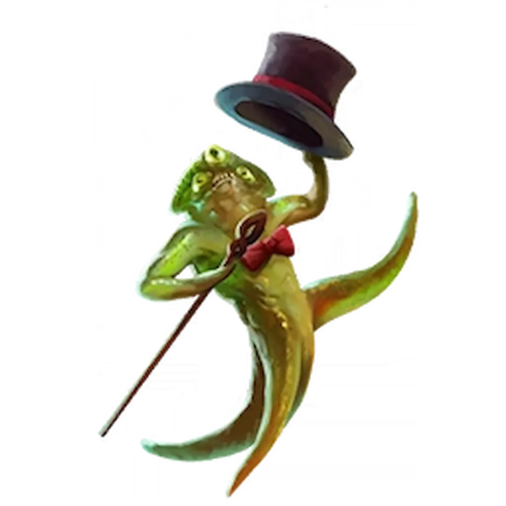
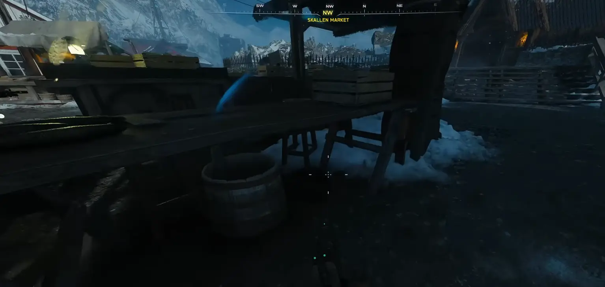
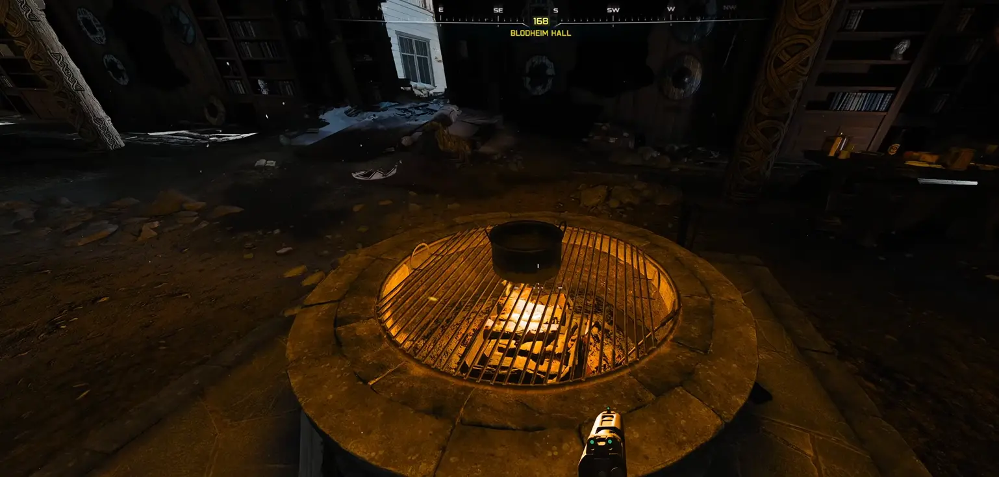
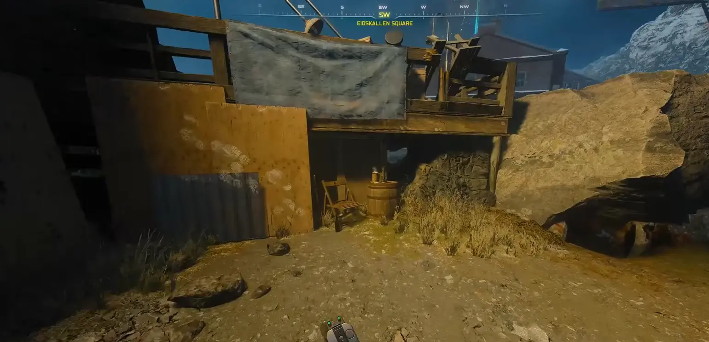
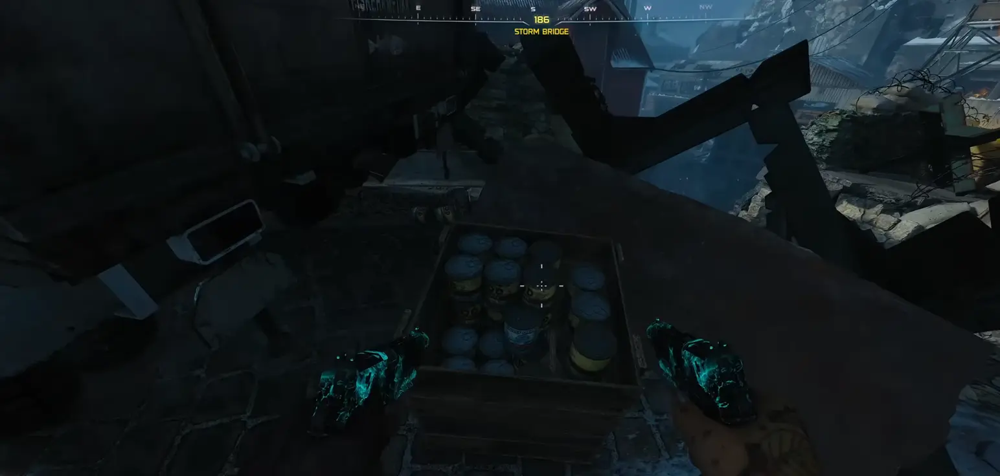
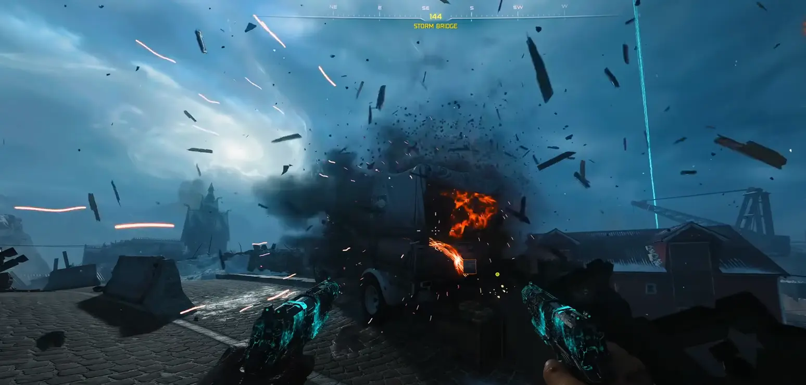
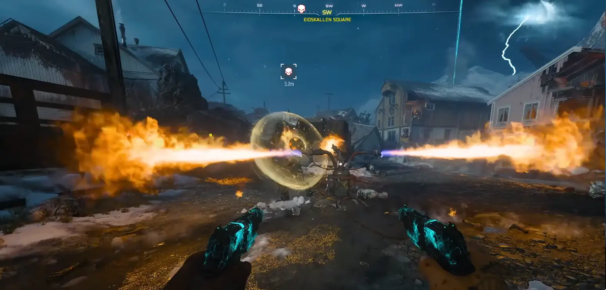
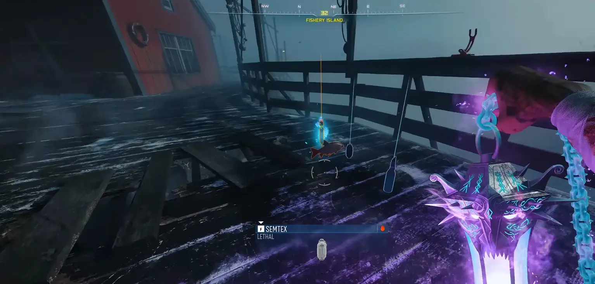
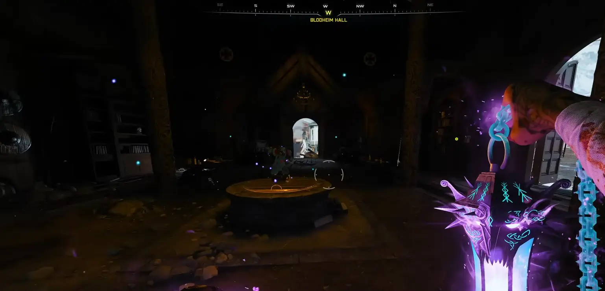

Musisz mieć ukończone główne zadanie w Totenreich. Mecz musisz odpalić na poziomie Tier 1. Wyzwanie jest dostępne na rundzie 40+.

Zanim zaczniecie koncert, potrzebujecie narzędzi. Na mapie ukryte są dwie pałeczki perkusyjne:
Udaj się do sekcji Market (Targ). Za maszyną Mule Kick znajdziesz duży kosz obok którego jest garnek. Musisz się położyć i wejść w interakcję, aby podnieść Garnek. Następnie zanieś go do pokoju z perkiem Vulture Aid i postaw na pustym palenisku wewnątrz chatki. Bez tego nic innego się nie zrespi.




Teraz możesz zdobyć drugą porcję chili. Strzel z czegoś wybuchowego (granat, wyrzutnia rakiet) w tył ciężarówki na moście (celuj w skrzynię w środku). Wypadną Orange Chili Chunks (Pomarańczowe kawałki chili). Podnieś je i dodaj do wywaru. TERAZ możesz ukończyć zadanie na cudowną broń Yoten Star.

Musisz zwabić potwora Necro Pinser pod jedną z pułapek ognistych na mapie. Pułapka musi zadać mu ostateczny cios. Jeśli padnie, upuści Lobster (Homar). Zabierz go i wrzuć do garnka.

Weź wędkę z dowolnego stanowiska i czekaj na specjalną rundę z Frost Zombies (Mroźne Zombie). Tylko wtedy masz szansę wyłowić Red Fish (Czerwona ryba). Gdy spławik zaświeci na niebiesko, wyciągaj! Ryba ląduje w garnku.

Gdy nadejdzie runda 40, wejdź w interakcję z gotowym wywarem. Pojawi się króliczek Mr. Peaks i zacznie tańczyć. Teraz musisz zabić około 100 zombie przy użyciu Yoten Star blisko niego. Gdy usłyszysz śmiech królika, próba jest zaliczona.

Co daje ten Relikt?